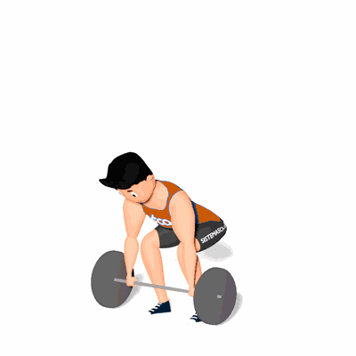

Clean

É um movimento funcional do corpo que constrói músculo e força. Traz imensos benefícios, desde o fortalecimento do core, a melhoria do movimento ou a potência na realização de outros exercícios.
Ficha Técnica
Tipo: CrossFit
Grupo Muscular: Corpo
Aparelho: Nenhum
Músculos: Nenhum
Como realizar
- Comece com uma postura de força, um pouco inclinada sobre os joelhos, segurando a barra na frente das suas canelas;
- Estenda-se verticalmente usando os quadris para puxar a barra até a posição de hang clean, usando os músculos dos ombros e coxas como ponto de alavancagem;
- Com a barra alta, deve explodir para cima através dos seus quadris. Empurre o seu peito para fora e encolha os ombros e puxe a barra para uma posição rack;
- Depois atire os cotovelos para cima e para fora de modo que fiquem paralelos ao chão;
- À medida que dirige os pés para o chão e se puxa para baixo da barra, deve simultaneamente mergulhar o corpo em agachamento frontal;
- Assim que o agachamento se soltar, exploda através da barra em uma posição vertical;
- Retorne à posição inicial.
 RC STORE
RC STORE